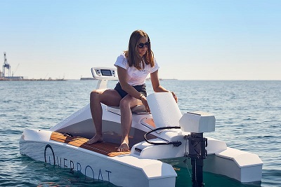
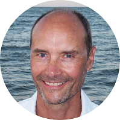
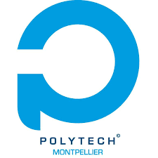
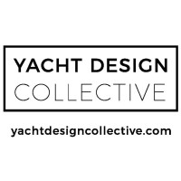
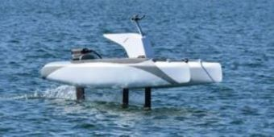
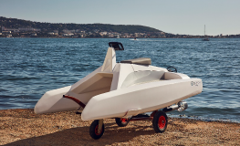
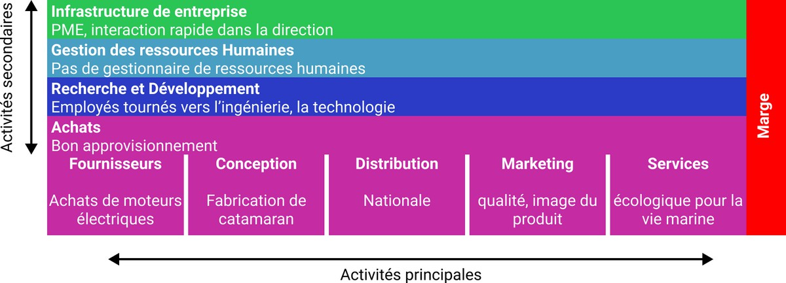
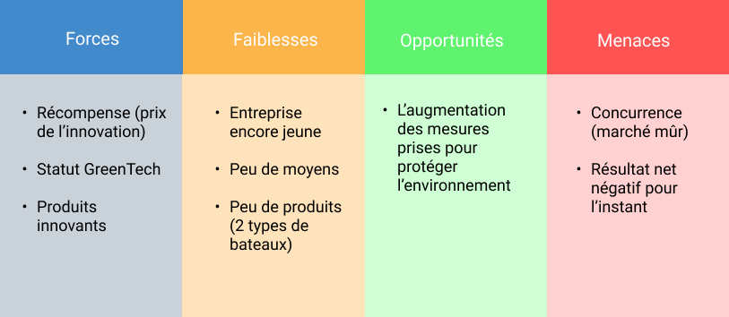

Sommaire
- Présentation de l'entreprise
- Description du modèle économique
- Etude la chaine de valeur
- Outils de diagnostic externes et internes
1. Présentation de l'entreprise
Neocean est une microentreprise privée, composée de 7 employés, qui a pour finalité de réaliser un profit. C'est une organisation marchande nationale destinée aux consommateurs, entreprises et à l'administration. Elle a été crée le 01/06/2021 et se situe au 13 RUE D AMSTERDAM, 34200 SETE

L'entreprise est fondée par Vincent Dufour, qui "réfléchit depuis longtemps à une nouvelle façon de naviguer sans polluer ni perturber la vie marine. Inspiré et engagé, depuis 3 ans, il développe avec son équipe la solution de navigation de demain." Neocean a participé au concours Occitanie Innov, a remporté le Grand Prix de l'innovation et le prix de la mobilité intelligente et durable.

Neocean travaille dans le secteur d'activité de l'ingénierie, le nautisme et elle a pour objectif de créer des catamarans électriques qui permettent de ne pas déranger l'habitat sous-marin. L'entreprise est labellisée GreenTech Innovation, elle est soutenue par le Ministère de la Transition écologique. Son produit, l'Overboat, a été conçu et fabriqué par la collaboration de l'Université de Montpellier.
- Partenaires de recherche : Polytech Montpellier, Lirmm, Lmgc...
- Partenaires industriels : Yacht Design Collective, SCC...
- Soutien : Université de Montpellier, Région Occitanie, Solar impulse foundation



2. Description du modèle économique
- L'Overboat possède une réduction de 60% du besoin en énergie.
- L'Overboat fonctionne par un moteur électrique qui consomme moins qu'un moteur thermique.
- L'Overboat pèse moins lourd qui permet au bateau de flotter et de décoller.

L'Overboat est connu pour être économique, pratique et écologique avec 0 bruit, 0 pollution.
Il existe également un produit alternatif, L'Overboat classic, plus léger, moins chère et des fonctionnalités similaires que la version originale.

| Principales dépenses | Principales recettes |
|---|---|
| Résultat d'exploitation : - 370K € | Vente de marchandises : 11 732K € |
| Dettes financières : 607K € | Marge brute : 103K € |
| BFT : 106K € | |
| Dettes financières : 607K € |
Le type de modèle adopté par Neocean est la création de catamarans volants électriques. Les destinataires sont les administrations, les entreprises et les consommateurs tels que des plaisanciers.
3. Étude de la chaine de valeur

4. Outils de diagnostic externes et internes
Pestel :
| Politique | Politique française stable, aides aux entreprises |
| Économique | Monnaie stable |
| Socioculturel | Population de plus en plus à l'environnement (bateau "propre") |
| Technologique | De plus en plus d'investissement dans la R&D |
| Écologique | De plus en plus de mesure pour protéger l'environnement |
| Légal | Normes de sécurité |
SWOT :
